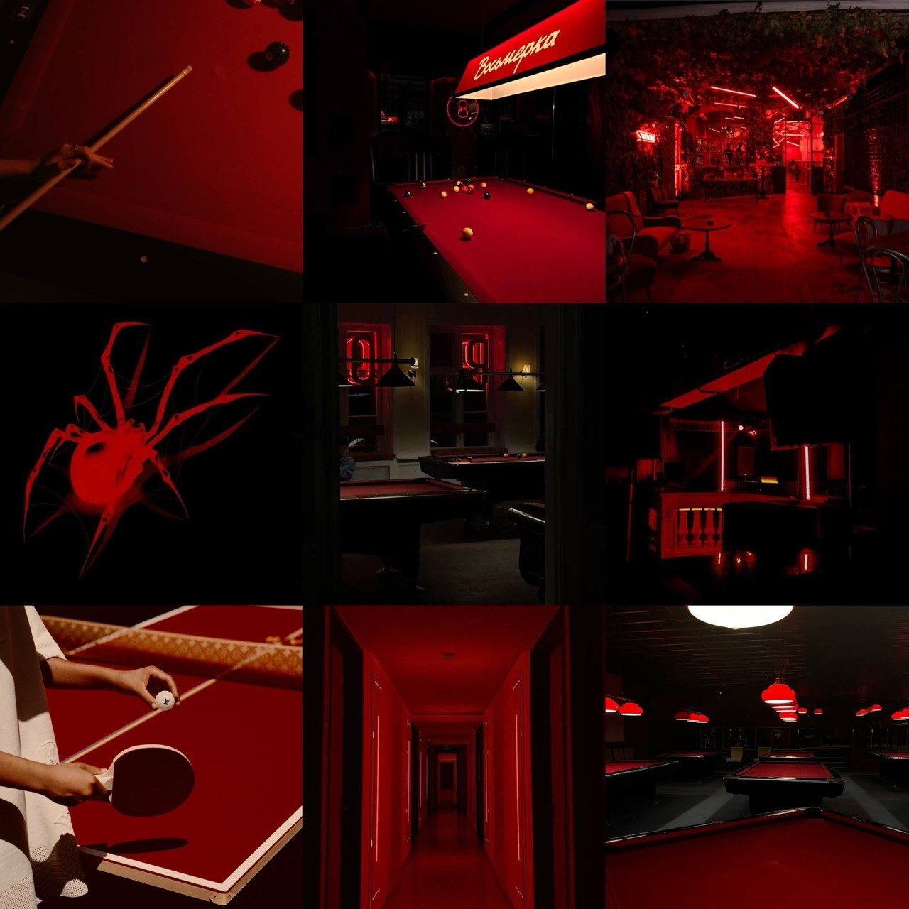
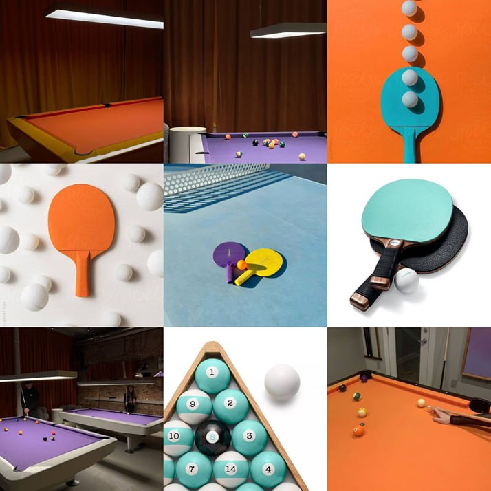
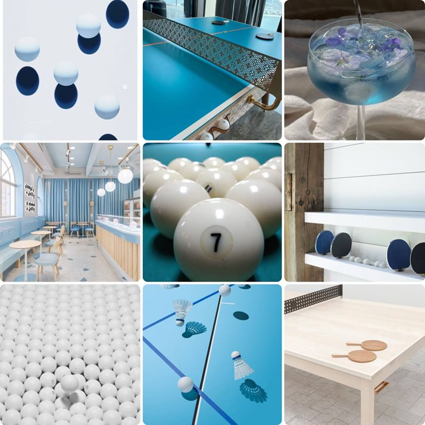

Клиент
Бильярдно-теннисный клуб «КлубПаук». Санкт-Петербург.
02
Бриф, аудитория, миссия, концепция, нейминг и визуальная стратегия — основания, на которых строится фирменный стиль.
Что заказано, кто клиент, какие задачи. Коротко и по делу.
Бильярдно-теннисный клуб «КлубПаук». Санкт-Петербург.
Разработка фирменного стиля и интерактивного брендбука.
Городские жители 20–30 лет. Ценят атмосферу, дружескую конкуренцию и активный отдых.
Спроектировать фирменный стиль и собрать интерактивный брендбук. Визуальная система должна передавать характер клуба — открытость, азарт, рост, общение и комфорт — и работать на всех носителях: от визитки до вывески.
20–30 лет, городские, активные. Приходят за атмосферой, остаются ради компании. Теннис и бильярд для них — повод собраться, а рейтинг — повод вернуться. Клуб работает и как площадка для игры, и как место встреч.
Концепция «КлубПаука» — про притяжение и стратегическую игру. Паук выстраивает сеть точно и терпеливо. Клуб работает так же: затягивает и не отпускает. Каждый визит — не просто партия, а кусок личной истории: победы, рейтинг, знакомые соперники.
Четыре опоры бренда: азарт, атмосфера, сообщество, соревнование. Два непохожих характера — быстрый реактивный теннис и неспешный тактический бильярд — уживаются под одной крышей. Каждый гость находит свой формат азарта.
Рейтинговая система и турниры делают клуб чем-то большим, чем место досуга. Посетитель следит за прогрессом, соревнуется со знакомыми и возвращается снова — уже не как случайный гость, а как участник сообщества.
Миссия «КлубПаука» — собрать под одной крышей людей, которым нравится играть, соревноваться и проводить вечера в хорошей компании. Неважно, новичок ты или опытный игрок — клуб открыт для всех.
Сюда возвращаются, чтобы что-то доказать, научиться или просто повеселиться.
Доступность для игроков любого уровня подготовки. Никаких разрядов и барьеров для входа в сообщество клуба.
Условия для живого общения, новых знакомств и формирования устойчивого сообщества вокруг пространства.
Рейтинги, турниры, таблица лидеров — но без пафоса. Здесь соревнуются для удовольствия.
Каждая партия — шаг вперед. Клуб фиксирует прогресс и помогает расти в своем темпе.
Продуманное пространство, где приятно и играть, и просто сидеть с друзьями.
«КлубПаук» — клуб в Санкт-Петербурге, где настольный теннис и бильярд живут под одной крышей. Два характера игры, общий рейтинг, одно сообщество.
Объединение двух форматов игры (теннис + бильярд) в едином пространстве.
Внутренняя рейтинговая система, формирующая мотивацию к регулярным посещениям.
Выразительная темная эстетика, ориентированная на вечерний сценарий использования и аудиторию 20–30 лет.
Современное визуальное оформление, привлекательное для digital-аудитории, формирующее «инстаграмный» образ пространства.
Ось Y — формат: от утилитарного спорта (вверху) до чистого развлечения (внизу). Ось X — подача: от функциональной утилитарности (слева) до атмосферы с геймификацией (справа). Конкуренты размещены на основе экспертной оценки их позиционирования и формата услуг.
«КлубПаук» занимает центр-правую зону: это спортивный досуг с выраженной атмосферой и рейтинговой системой — ниша, которую не закрывает ни один из прямых конкурентов.
Перебрали несколько рабочих названий. Каждое цепляло что-то одно — динамику, игровой характер или визуальный стиль.
КлубПаук
За «КлубПаук» проголосовало 47,2% опрошенной целевой аудитории.
Выбран как наиболее точно соответствующий образу бренда. Лаконично, запоминается, не имеет прямых аналогов среди конкурентов в сфере спортивно-досуговых клубов Санкт-Петербурга.
Паук — символ точности и контроля: качества, необходимые как в бильярде, так и в теннисе.
Стратегическое мышление и терпение — выстраивание игры партия за партией.
Паутина — метафора сообщества: социальные связи, которые формирует клуб.
Пространство, в которое хочется возвращаться: клуб как центр гравитации компании.
Образ паука хорошо работает в темной палитре и легко переносится на логотип, интерьер и носители.
На предпроектной фазе разрабатывались три визуальные концепции — холодная, теплая и темная. По итогам анкетирования 73,6% ЦА выбрали темный сценарий с неоновыми акцентами как наиболее соответствующий формату спортивного клуба.

Выбрано · 73,6%
Глубокий черный, красное сукно, неон и плотные тени. Концепция точнее всего передает вечерний сценарий и соревновательную атмосферу, формирует «инстаграмный» образ пространства и хорошо масштабируется на интерьер, мерч и digital.

Отклонено
Контрастные оранжевый и бирюзовый, графичные ракурсы инвентаря, яркая поп-эстетика. Концепция несла нужный драйв, но уходила в сторону детского/семейного формата и плохо ложилась на вечерний бар-сценарий.

Отклонено
Спокойная голубая палитра, светлые интерьеры, скандинавская простота. Концепция читалась как «премиум-кафе со столами», но не передавала вечерний сценарий и соревновательный драйв клуба.